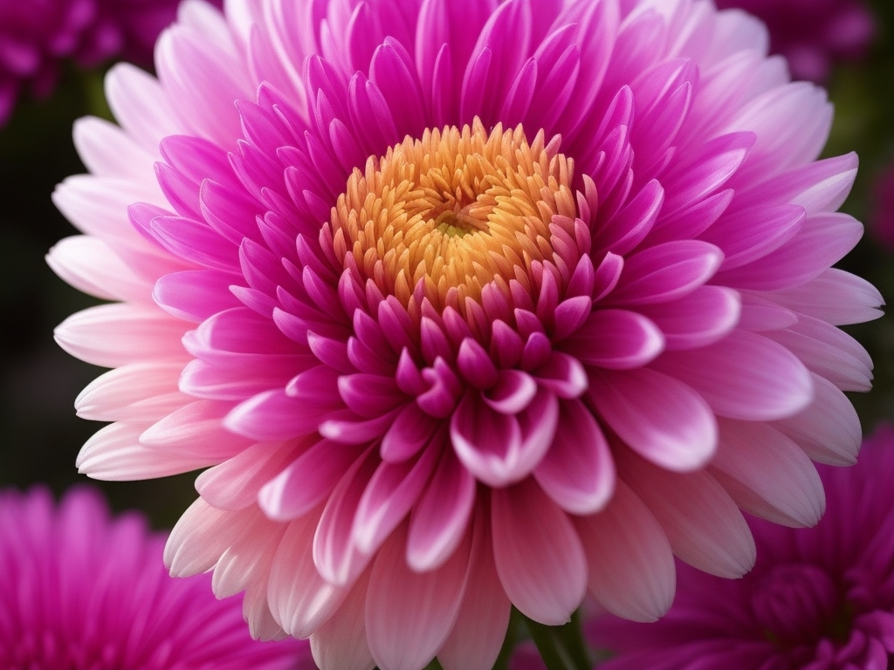

Хризантема
Хризантемы, эти прекрасные цветы, известные своим разнообразием форм и оттенков, являются одними из самых популярных декоративных растений.
Сотни видов и сортов хризантем предлагают разнообразие размеров, форм бутонов и цветов, что делает их отличным выбором для озеленения садов и домов.
Хризантемы обладают длительным сроком цветения, радуя глаз своими красками на протяжении осени.
Уход за хризантемами включает в себя регулярный полив, подкормку в период роста и правильное обрезание для поддержания формы и пышности растения.
Исследуйте удивительный мир хризантем, и вы обнаружите, что эти цветы могут стать настоящим украшением любого сада или интерьера.
Уход за хризантемами
- Разместите хризантемы на светлом месте с утренним солнцем.
- Поливайте регулярно, поддерживая влажность почвы.
- Удобряйте в период активного роста сбалансированным удобрением.
- Проводите обрезку для формирования куста и удаления увядших цветов.
- Защищайте от вредителей и болезней, проводя профилактические обработки.
- Наслаждайтесь красотой хризантем на протяжении всего сезона цветения.